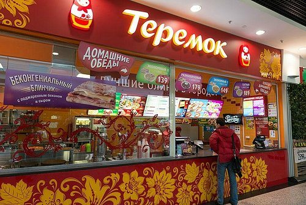
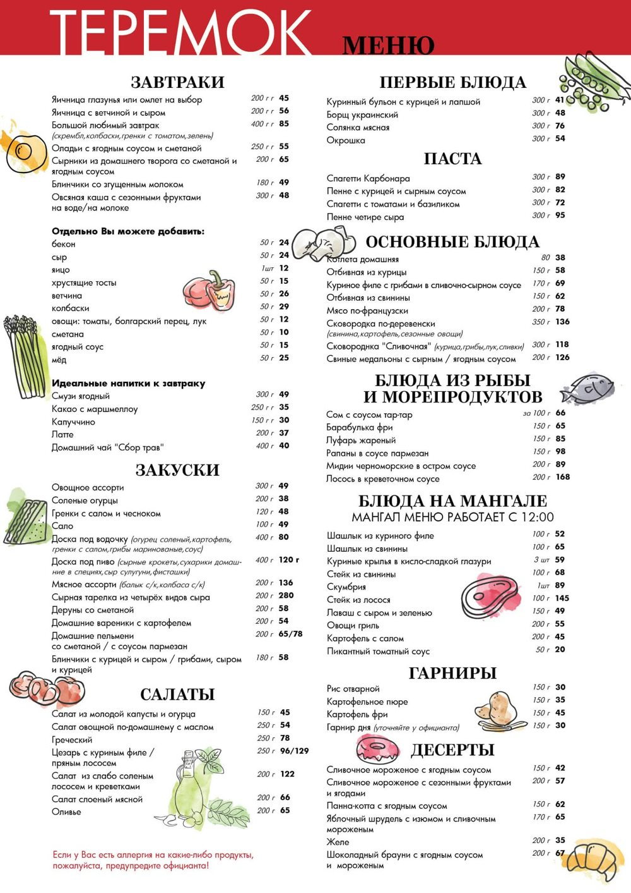
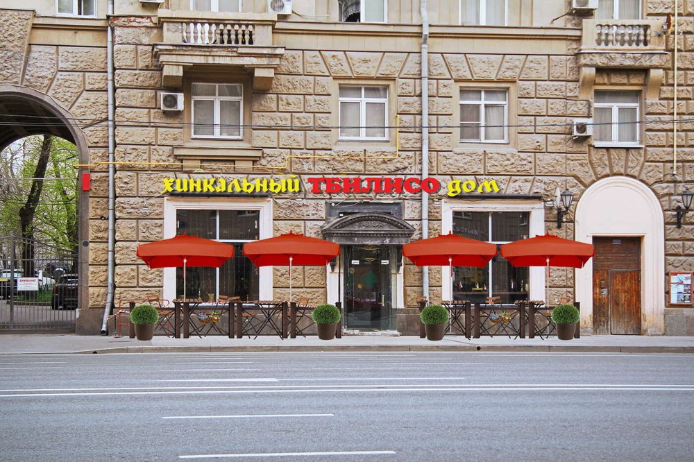
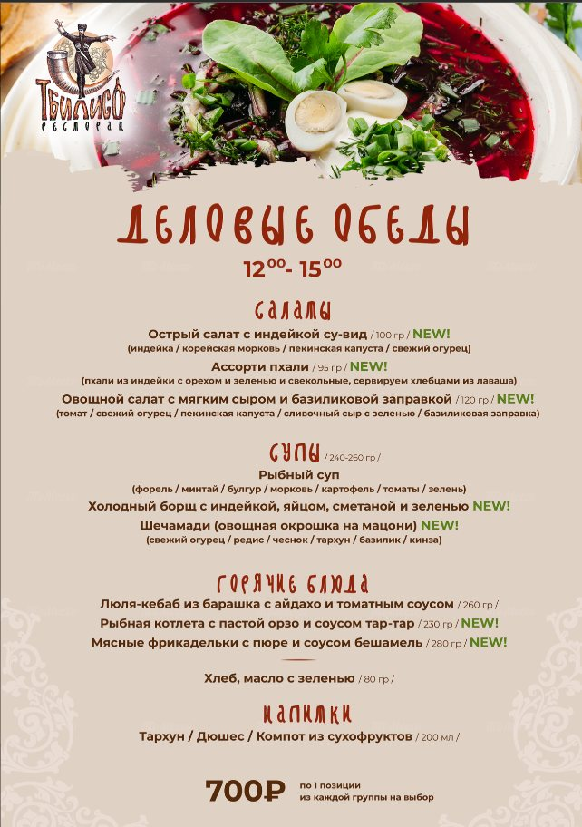
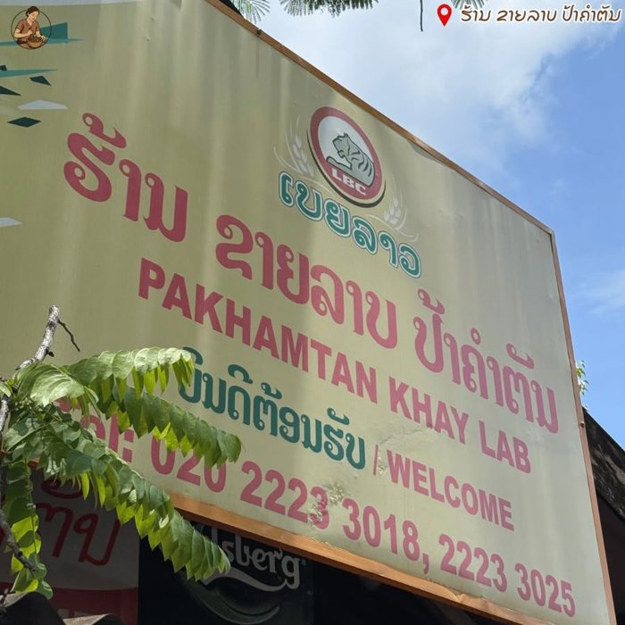
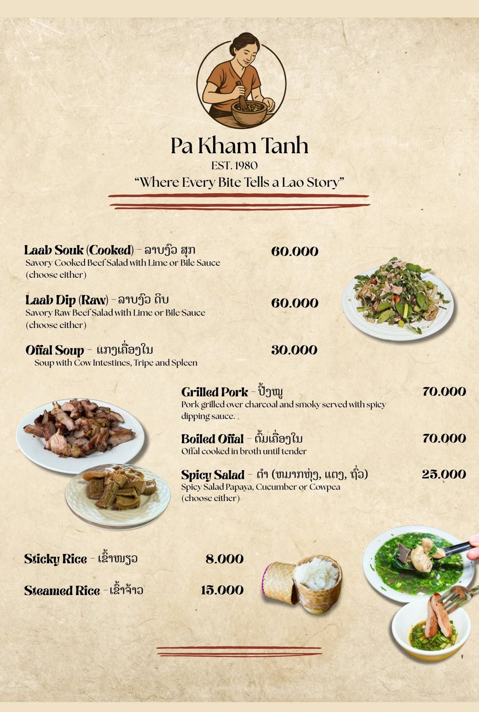
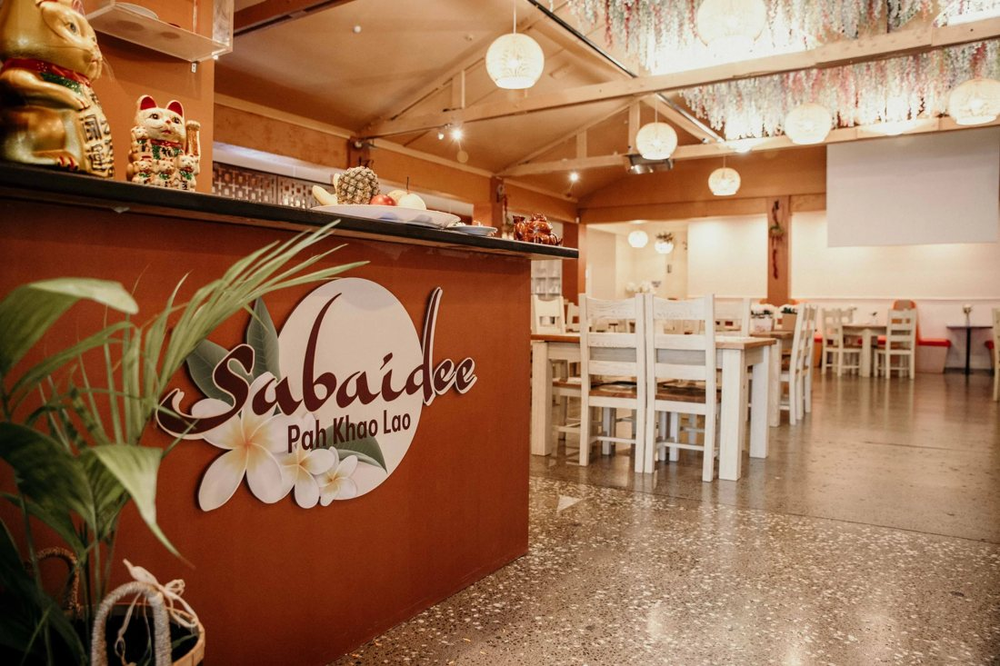
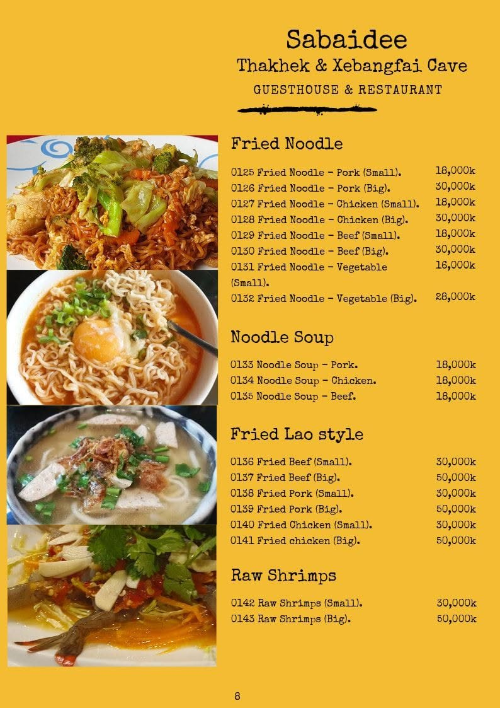

Слова
Типы названий
| Тип | Пример |
|---|---|
| Сказка | «Теремок» (сказка про маленький дом) |
| Город | «Тбилисо» (Тбилиси — столица Грузии) |
| Блюдо | ຮ້ານເຂົ້າປຽກໄກ່ (суп с лапшой и курицей) |
| Имя | ຮ້ານລາບ ປ້າຄຳຕັນ (Pa Kham Tanh Restaurant — «Ресторан лаапа тётушки Кхам Тан») |
| Приветствие | Sabaidee (ສະບາຍດີ — «Здравствуйте») |
Рестораны России
ТеремокРоссия
Русская сказка и маленький дом. Название создаёт уют. В меню — блины, супы, паста и десерты.

Меню

Нажмите на меню, чтобы увеличить.
ТбилисоРоссия
Название связано с Тбилиси. Здесь грузинская кухня: шечамади, люля-кебаб и другие блюда.

Меню

Нажмите на меню, чтобы увеличить.
Рестораны Лаоса
ຮ້ານລາບ ປ້າຄຳຕັນPa Kham Tanh Restaurant
Название — имя: ປ້າ (па) значит «тётя». Здесь подают лаап (мясной салат) и клейкий рис. «Ресторан лаапа тётушки Кхам Тан».

Меню

Нажмите на меню, чтобы увеличить.
SabaideeЛаос
Sabaidee (ສະບາຍດີ) — «Здравствуйте». Название звучит как приветствие и показывает дружелюбие. В меню — лапша и жареные блюда.

Меню

Нажмите на меню, чтобы увеличить.
Новые слова
| Слово | Перевод |
|---|---|
| название | ຊື່ |
| вывеска | ປ້າຍຮ້ານ |
| ресторан | ຮ້ານອາຫານ |
| ресторионим | ຊື່ຮ້ານອາຫານ |
| меню | ເມນູ |
| блюдо | ຈານອາຫານ |
| кухня | ອາຫານ |
| гость | ແຂກ |
| традиция | ປະເພນີ |
| ассоциация | ການເຊື່ອມໂຍງ |
| идентичность | ເອກະລັກ |